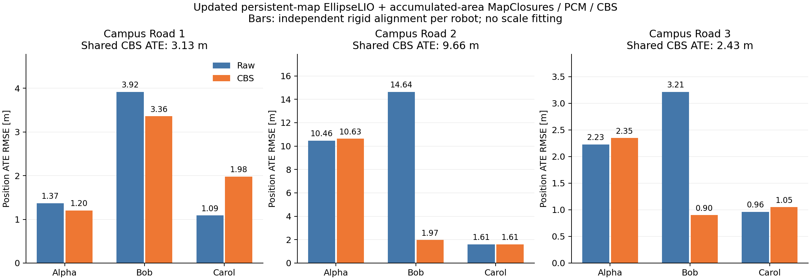

Updated EllipseLIO — accumulated-area MapClosures / PCM / CBS
21 September 2026 · Alpha, Bob and Carol · workstation 148 without CPU or memory quotas.
Odometry uses the updated persistent map. Retrieval uses all stored native representatives within an 80 m horizontal radius, without a scan-age or height cutoff. Galleries show selected snapshots whose images reproduce the cached ORB features exactly.
Laboratory 4 failed: Bob diverged, so that group’s backend was not run. The three Campus Road groups completed; CBS did not improve every robot.
Full report · Audited numeric results
